Chapter 8 · Part 1 — Yum
The warrior stared back at Jack and Annie.
“We were helping one of your honey guides,” said Annie.
The warrior was as still as a statue.
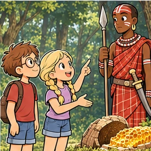
“We didn’t mean to steal anything,” Jack said. “In fact, it’s all yours. We’ve had enough.”
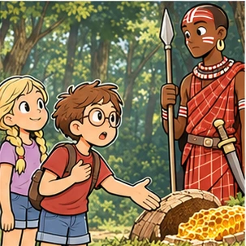
“Lots of good honey still there,” Annie said, smiling.
The warrior narrowed his eyes.
Is he angry? Jack wondered.
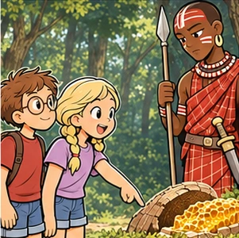
“I’m sorry we were trespassing,” said Jack. “We come in peace. In fact, we bring gifts.” He picked up his backpack and held it out to the warrior.
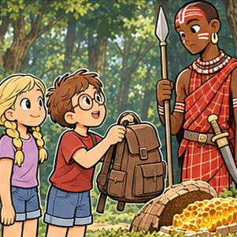
The warrior still didn’t move.
“This?” Jack held up his book.
Nothing.
“Uh—” Jack reached into his pack. He pulled out the big jar of peanut butter.
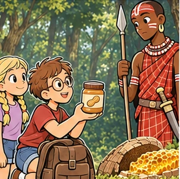
“Peanut butter!” He pulled out the loaf of bread. “Bread! Hey. Hey! How about a peanut butter and honey sandwich?”
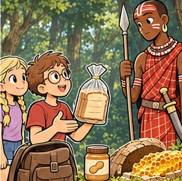
“Yum!” Annie said, watching the warrior.
The warrior stared at the food.
“We’ll show you,” said Jack.
As Jack unwrapped the bread, his hands shook.
Annie opened the jar.
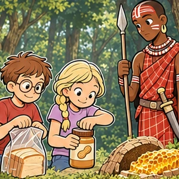
“We don’t have anything to spread it with,” she said.
“Use your fingers,” said Jack.
“Excuse me,” Annie said to the warrior. “I have to use my fingers. But they’re pretty clean. An elephant just—”
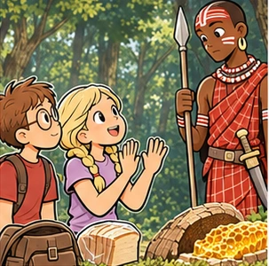
“Just do it, Annie!” said Jack.
“Okay, okay.”
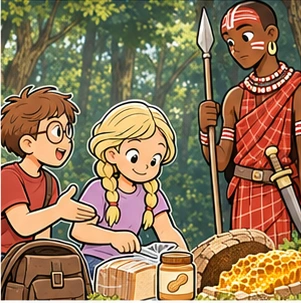
She spread the peanut butter onto a slice of bread with her fingers. At the same time, Jack spread the honey from the beehive on another slice.
Jack and Annie put their pieces of bread together.
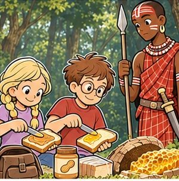
“Ta-da!” said Annie, handing the sandwich to the warrior.
The warrior took the sandwich, but he didn’t eat it. He just looked at it.
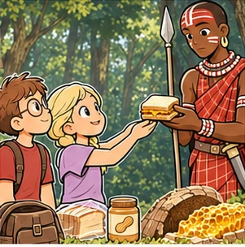
“Let’s make sandwiches for us, too,” Jack said. “So he doesn’t have to eat alone.”
They quickly made two more sandwiches.
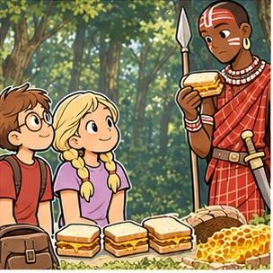
“See, like this,” said Annie. She bit into her sandwich. “Mmm … yum.”
Jack took a bite, too. “Mmm … ” he said. It was really good.